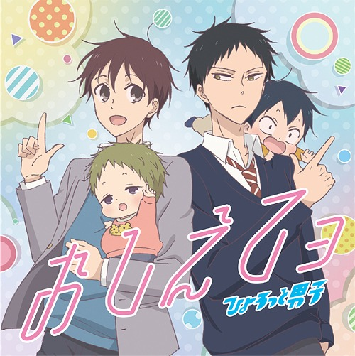
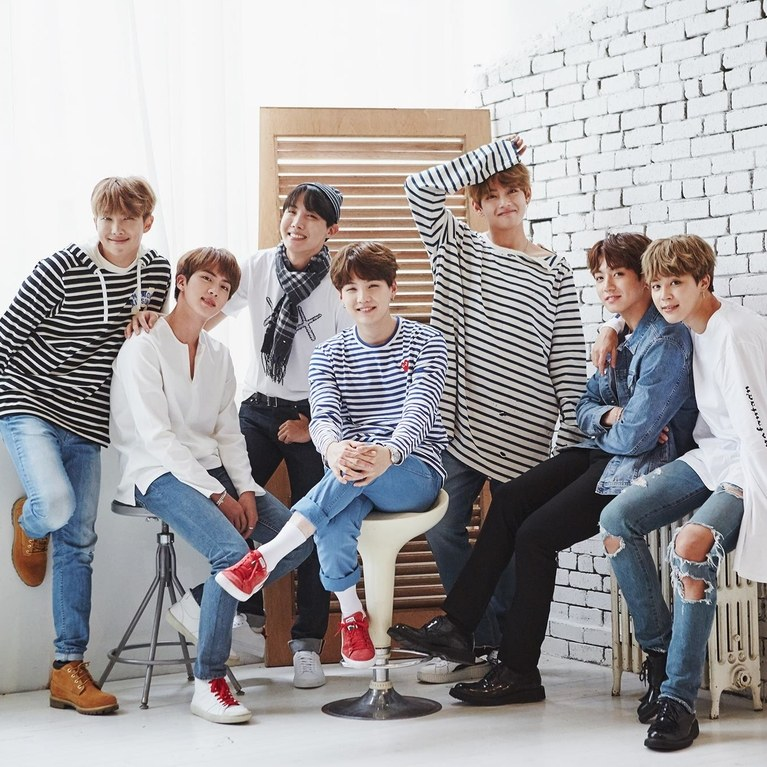
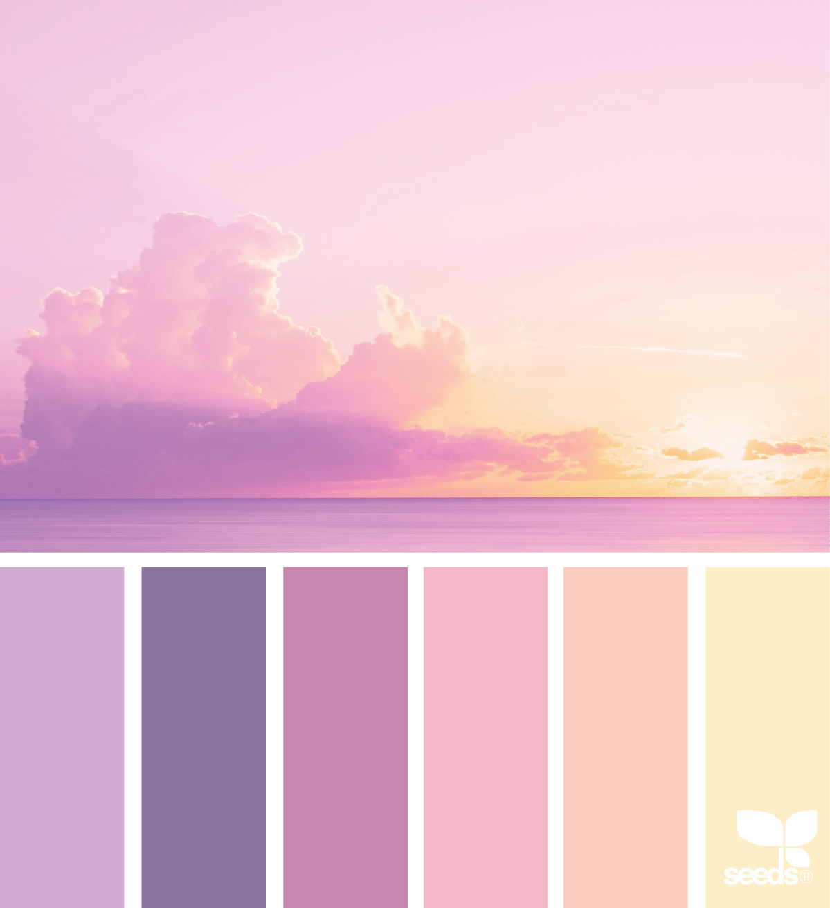

Bai Hanan U. Mama
WEBSITE
Hobbies&Favorites

I love watching anime.

I love music because it makes me feel relax.
I love dancing even if I'm not so good at it that's why I don't call it as a talent.

I love Kpop and Bangtan Sonyeondan (BTS) is the paricular group I stan. I personally love them.

I love eating especially snacks but since it's not so good in our health I also limit myself.

My favorite colors are purple,pink,green,caramel,black,white, blue and any pastel colors.